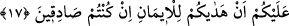

sen, bunu muhâfaza et, başkasına söyleme. Eğer sebat ve bakâ nasip olursa bunun bir
mevhibe-i ilahiye olduğunu anlar, Allah’a şükreder ve şükürde muvaffak kılmasını
O’ndan istersin. Eğer bunun dışında başka bir şey olursa, o zaman bunda ziyade ilim,
marifet, teyakkuz ve te’dîb nûru vardır.”
Hâsılı, insan çoğunlukla kendinde olmayan veya kendinden zâil olacak şeyi haber
verir. Sû-i hâlden ve kemâl iddiâsından Allah’a sığınırız!
Bazıları der ki: Kesinlikle doğru olsun yalan olsun iddiâlı olmaktan uzak durun. Yalan
olan iddia yüz karartır, gerçek olan ise îmanın nûrunu söndürür, zayıflatır. Sakın
gördüğünüz şeyleri söylemeyin, güzel sûretlere bakmayın. Bunların hepsi nefis ve
şehvetlerdir. Kim bir kavmin yolunda onlardan olmayan bir şey ihdas ederse o bizden
olmadığı gibi bizde de değildir. Tâbi olun, uzaklaşmayın, yoldan çıkmayın, tevhid ehli
olun, birleyin, şirk koşmayın, hakkı tasdik edin, şikâyet etmeyin, sabredin, sızlanıp
durmayın, sebat edin, ayrılmayın, isteyin, bıkmayın, bekleyin, ye’se düşmeyin, kardeş
olun, düşman olmayın, tâatte bir araya gelin, ayrılmayın, günahlardan temizlenin, onlara
bulanmayın. Her biriniz kalbinizin kapı askeri olsun; oraya ancak Allah’ın emrettikleri
girsin, her biriniz dikkatli olsun, güvenmesin, korksun, emin olmasın, teftiş etsin, gâfil
olmasın!
17. Onlar İslâm’a girdikleri için seni minnet altına sokuyorlar. De ki:
Müslümanlığınızı benim başıma kakmayın. Eğer doğru kimselerseniz bilesiniz ki,
sizi imana erdirdiği için asıl Allah size lütufta bulunmuştur.
“Onlar İslâm’a girdikleri için seni minnet altına sokuyorlar.” Yani Müslüman
olmalarını sana karşı bir minnet kabul ediyorlar. Minnet, öyle bir nimettir ki, onu veren
nimet verdiği kimseden karşılık talep etmez. Çünkü bundan maksat muhtacın bir karşılık
vermesinden kat-ı nazarla ihtiyacın kesilmesidir. Denilmiştir ki: İki rıtl ağırlığında bir
ölçü birimi olan “menâ” kelimesi de bu kökten türetilmiştir. Ağır nimet demektir.
Râğıb der ki: Minnet, ağır nimettir. Bu iki açıdan söylenir: Birincisi, bunun bilfiil
olmasıdır. Denir ki: ‘Filanca, filancaya ağır nimet verdi’. Allah Teâlâ’nın şu âyet-i
kerimesi de bu kabildendir: “Andolsun ki, Allah müminlere büyük bir lütufta
bulunmuştur.” (Âl-i İmran 3/164) Bu gerçek anlamda sadece Allah Teâlâ için olur.
İkincisi ise, bunun söz ile olmasıdır ki, küfrân-ı nimet durumu hariç insanlar arasında
çirkin kabul edilir. Bu nedenle şöyle denilmiştir: Minnet, yapılan şeyi yıkar. Küfrân-ı
nimet durumunda zikredilmesinin güzel olmasından dolayı da nimete karşı nankörlük
varsa minnet güzeldir, denilmiştir. Âyet-i kerimedeki onların Allah’a karşı minnetleri
ikinci türden söz ile minnet iken, Allah’ın onlara karşı olan minneti ise fiili bir
minnettir. Bu minnet Cenâb-ı Hakk’ın onlara hidâyet etmesidir.